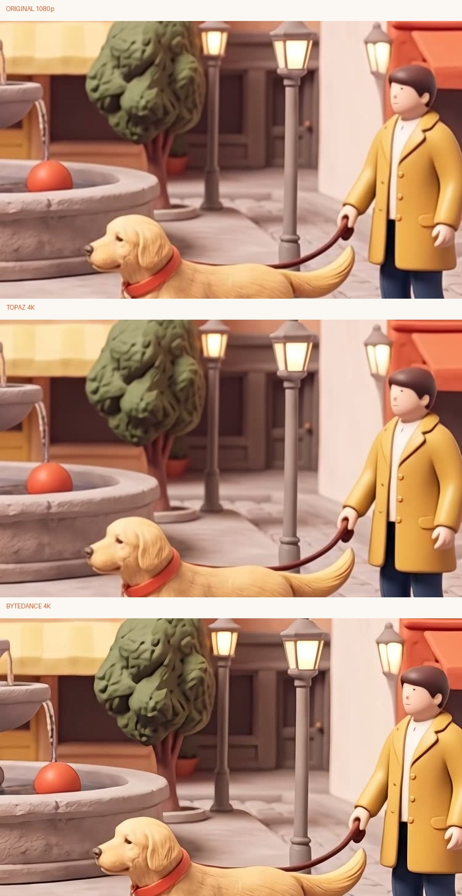

← Πίσω στο site
Τεστ ποιότητας: αυθεντικό εναντίον Topaz 4K
Το site παίζει τώρα με τα αυθεντικά βίντεο. Το Topaz είναι κλασικό εργαλείο καθαρισμού: δεν ξαναζωγραφίζει τίποτα, μόνο σφίγγει την εικόνα. Δες τα δύο βίντεο και τα κοντινά και πες αν προχωράμε.
Το ίδιο πλάνο, δίπλα-δίπλα
Αυθεντικό (παίζει τώρα στο site)
Κοντινό στο ίδιο καρέ, και οι τρεις εκδοχές

Το μεσαίο (Topaz) κρατάει πρόσωπο, τρίχωμα και πινακίδες ολόιδια με το αυθεντικό. Το κάτω (ByteDance, αυτό που απορρίψαμε) τα είχε ξαναζωγραφίσει. Κόστος για όλο το φιλμ με Topaz: 8 credits ανά κομμάτι, 8 κομμάτια = 64 credits.